Гравитационная линза
Векторная галерея всех 16 полноразмерных моделей и 6 финальных кросс-путей. Каждый SVG имеет прозрачный холст 128 × 128 пикселей; при смешанном развитии поверх основного вида накладывается небольшой узнаваемый элемент вторичной ветки.
А. Чёрная звезда
Вязкая орбита → искривление траектории → кольцо провала → горизонт событий → нулевая звезда.
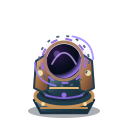
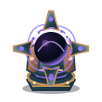
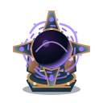
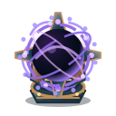
В. Отражатель
Отдача поля → зеркальный резонанс → толчковая диафрагма → зеркало давления → великий отражатель.
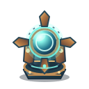
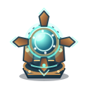
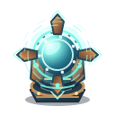
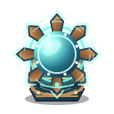
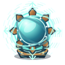
С. Прилив массы
Тяжёлый изотоп → приливное разрушение → лунный молот → сжатие ядра → луна предела Роша.
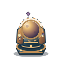
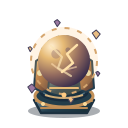
Шесть финальных кросс-путей
Основной путь имеет пятый тир. Вторичная ветка имеет второй тир; её отличительные накладки не перекрывают центральный объект.
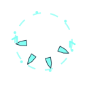
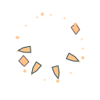
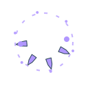
Модели масштабируются векторно. Физический footprint остаётся 26 пикселей независимо от художественного размера.